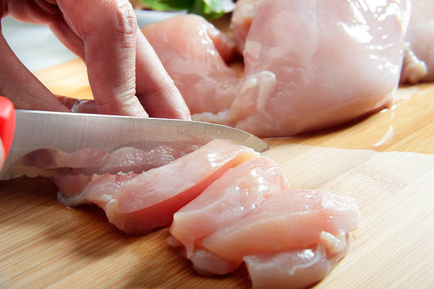
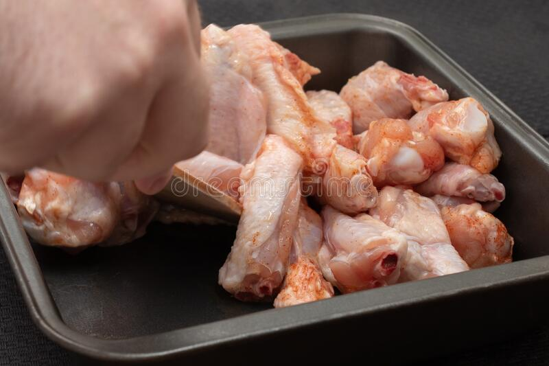
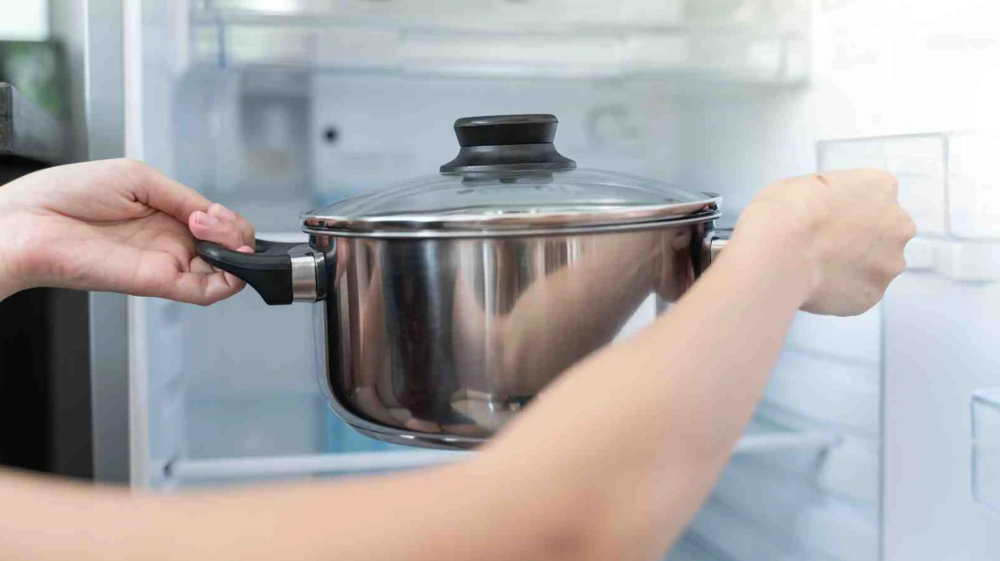
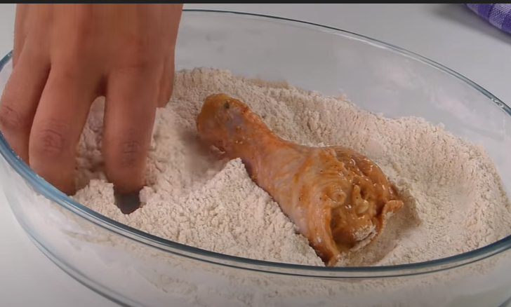
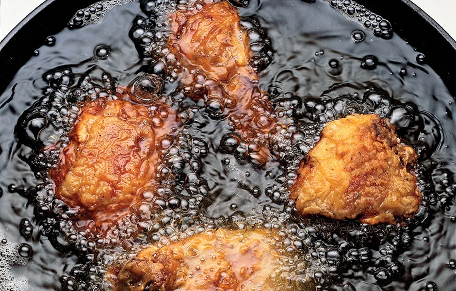
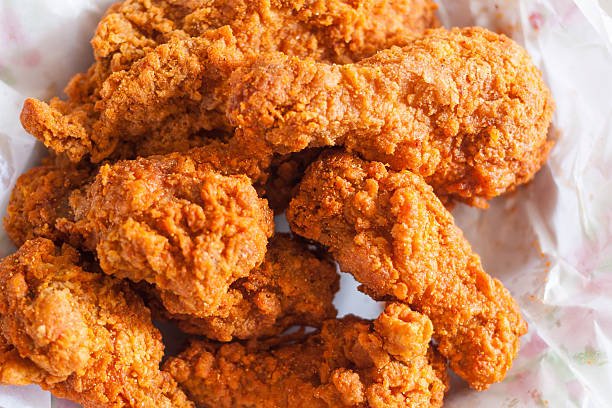

Are you preparred to make the best fried chicken of your life? Well look no further, this recipe will make even the best cook's mouth's water. Juicy, crispy and fresh chicken that will make
Cut your chicken into small pieces
Mix all the dry ingredients and soy sauce
Keep in the fridge for atleast 1 hour before cooking
Cover with a mixture of eggs, flour and corn starch.
Fry in a large pot filled with a generous amount of oil. Remember to fry in small batches to prevent overcrowding
Enjoy your juicy succulent peices of fried chicken that im sure you will want to make again.
Made by @Wadi-Wohab using @One-Month